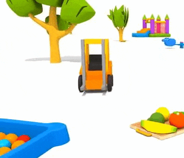

Terminaremos con los proyectos con bandas de rodadura construyendo una carretilla elevadora.

Sobre la base del robot educador, construiremos una carretilla elevadora.
Utilizaremos el motor mediano para subir y bajar las horquillas de la carretilla.
La carretilla tendrá que ser capaz de cojer un objeto, elevarlo, avanzar con él, soltarlo en otro sitio
y volver al punto de inicio.
A continuación, mostraremos un ejemplo de construcción de una carretilla elevadora base.
Empezaremos por montar la base motriz (pincha en la imagen para ver las instrucciones de montaje).

Empezamos montando el motor que moverá la carretilla.


Le añadimos el resto de la estructura y engranajes.


Le añadimos un par de engranajes más (ojo, que lleva un engranaje a cada lado de la viga).


Seguimos añadiendo parte de la estructura.


Unimos la estructura montada a la base motriz.

Ahora montamos la horquilla.


Empezamos a montar la banda de rodadura que hará que suba y baje la horquilla que recojerá los objetos.


Le añadimos la horquilla a la banda de rodadura.

Finalmente añadimos la banda de rodadura a la base y estructura ya montada (ojo al último engranaje de la parte de arriba, que tendrá que ir entre las dos vigas).

Le añadimos el cableado y tendremos la carretilla elevadora terminada.
Nos debería de quedar un montaje de este estilo.

Programaremos la carretilla para que coja el objeto construido, elevarlo, avanzar con él, soltarlo en otro punto y volver al punto de inicio.

Nuestro proyecto terminado funcionaría de la siguiente forma.